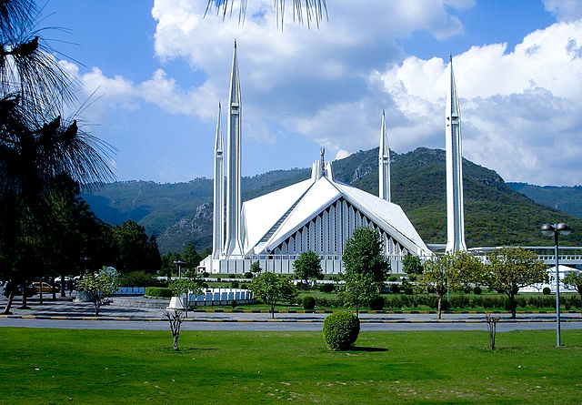

Islamabad is the capital of Pakistan and is one of the most beautiful cities in the country. It is located in the foothills of the Margalla Hills and is surrounded by lush green forests. Islamabad is a modern city with a rich history and culture.
Your tour of Islamabad will begin at the Faisal Mosque, one of the largest mosques in the world. The mosque is made of white marble and has four minarets that are each 100 meters tall. The mosque can accommodate up to 100,000 worshippers.
Next, you will visit the Faisal masjid, a national monument that commemorates the creation of Pakistan. The monument is made of white marble and is surrounded by a beautiful garden.

After lunch, you will visit the Lake viewpoint, a Lake that showcases the beautiful Scenery in Pakistan. The Lake has a beautiful garden surrounded, including birds archary

In the evening, you will take a boat ride on Shakerpariyan park, a beautiful park that is located in the heart of Islamabad.

Your tour of Islamabad will end with a dinner at one of the many restaurants in the city. Islamabad has a variety of restaurants that serve Pakistani, Indian, Chinese, and Continental cuisine.
Islamabad is a beautiful city with a lot to offer visitors. The city has a rich history and culture, as well as a variety of attractions to see and do. If you are ever in Pakistan, be sure to visit Islamabad.